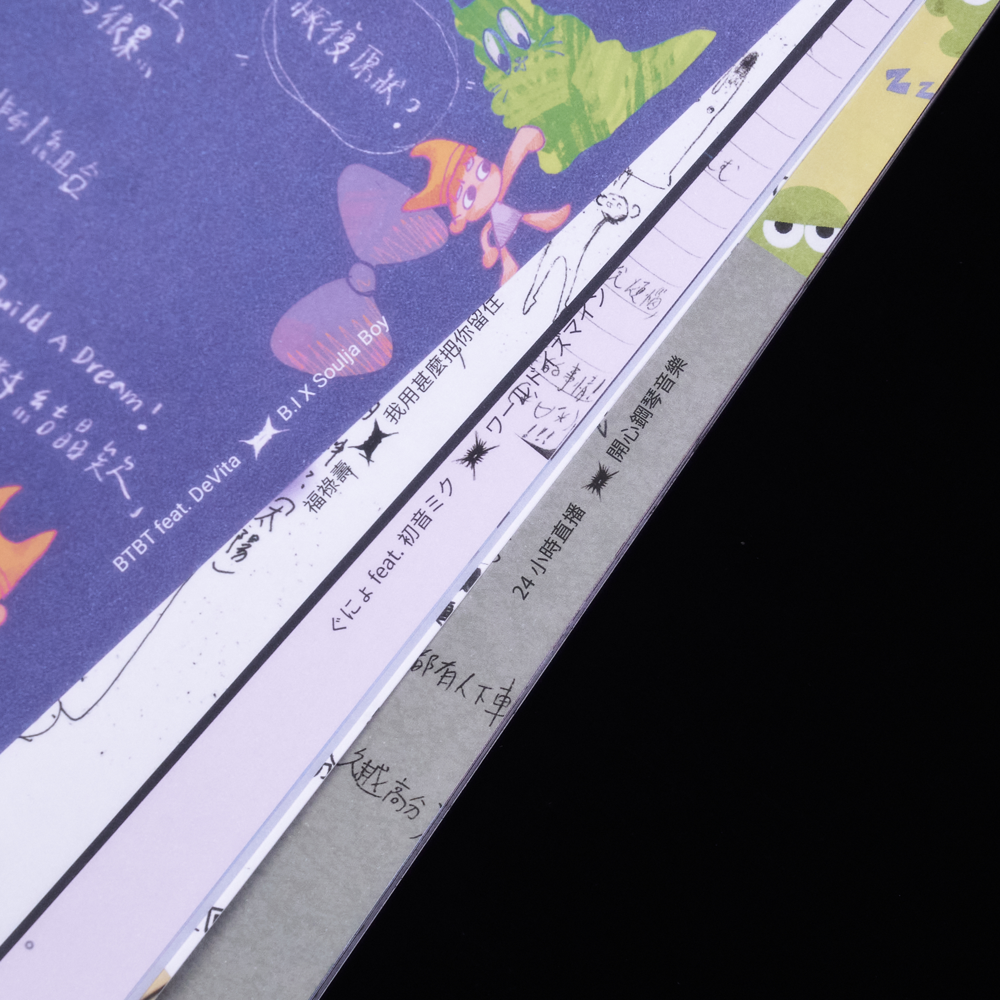

設定集
售價 500元
 產品介紹
產品介紹
內頁完整收錄 2023 SCCD Degree Show 獸 創作者的手稿、設定、內心話以及所有創作過程的碎片（含大學部畢業班及碩士班），從局部到整體，邀請你一起探索！

封面紙張上選用亮銀鋁箔卡
紙張表面呈現金屬色澤的光感，環境中的一切都能一同映現在設定集上，以匯集成獸的全貌。
UV印刷以及磨砂
封面透過UV印刷與磨砂，展現出創作過程中清晰與朦朧的交互堆疊、互相反射。透過視覺與觸覺，呈現獸留下的痕跡，亦是創作者們的足跡。

能更了解創作背景的特殊單元頁
將那些沒有輪廓的思緒，藉由八個特別問題，重組成屬於創作者的畫面，藉此匯集成獸的存在。

多層次的書本設計
設定集為創作靈魂之堆疊，封面及蝴蝶頁的尺寸上做出了差異，以形塑層次。更在特殊單元頁上使用描圖紙印刷，使其能夠以單頁個別和多頁重疊進行閱讀。

閱讀上的互動設計
在設定集的右側，匯集了創作者在創作時會聽的歌曲，使觀者能夠更貼近創作者的狀態。結合翻頁動畫增加閱讀上的互動，推翻傳統書本的閱讀體驗。
